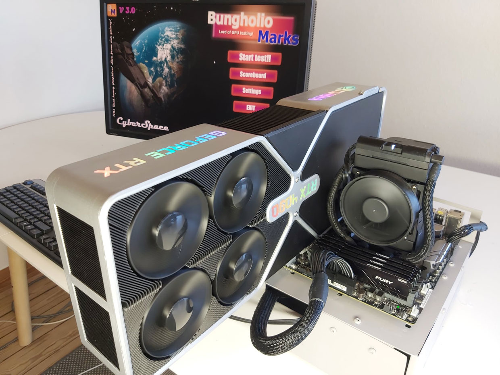

Performance Factors
The NVIDIA GeForce RTX 4090 is one of the most advanced and powerful graphics cards on the market. Several factors contribute to its exceptional performance, making it a top choice for gamers, content creators, and professionals. Here are the key performance factors of the RTX 4090:
1. GPU Architecture
The RTX 4090 is built on NVIDIA's latest Ampere architecture, which offers significant improvements in performance and efficiency over previous generations. The Ampere architecture features:
Second-generation RT Cores: Enhances real-time ray tracing performance, providing realistic lighting, shadows, and reflections.
Third-generation Tensor Cores: Improves AI-based tasks like DLSS (Deep Learning Super Sampling), which boosts frame rates while maintaining high image quality.
2. CUDA Cores
The RTX 4090 boasts an impressive number of CUDA cores, significantly more than its predecessors. CUDA cores are responsible for parallel processing tasks, and having more of them means the card can handle more complex calculations simultaneously, leading to better performance in gaming and professional applications.
3. Memory (VRAM)
The RTX 4090 comes with a substantial amount of high-speed GDDR6X memory. The key aspects of its memory are:
Capacity: Typically around 24 GB, allowing for the handling of large textures, models, and datasets.
Memory Bandwidth: High bandwidth ensures that data can be quickly transferred to and from the GPU, crucial for maintaining smooth performance in demanding applications.
4. Clock Speed
The RTX 4090 has high base and boost clock speeds, which contribute to its overall performance. The boost clock speed allows the GPU to dynamically increase its frequency during demanding tasks, providing extra power when needed.
5. Ray Tracing and AI Performance
Ray Tracing: The RTX 4090 excels in real-time ray tracing, thanks to its advanced RT Cores. Ray tracing simulates the behavior of light to produce realistic visuals, making games and applications look more lifelike.
AI Features: With enhanced Tensor Cores, the RTX 4090 leverages AI for tasks like DLSS, which improves frame rates without compromising visual quality.
6. Overclocking Potential
The RTX 4090 has a high overclocking potential, allowing enthusiasts to push the GPU beyond its factory settings for even better performance. Proper cooling and power delivery are crucial when overclocking to ensure stability and longevity.
7. Power Efficiency
Despite its high performance, the Ampere architecture's advancements contribute to better power efficiency compared to previous generations. This means the RTX 4090 can deliver top-tier performance without an exponential increase in power consumption.